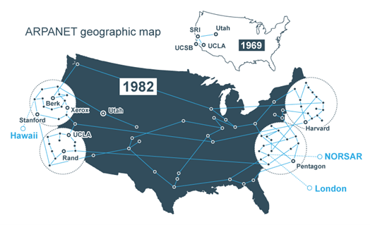
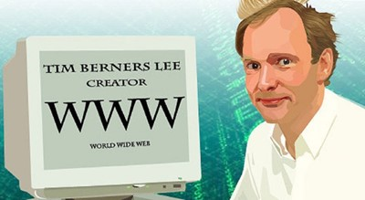
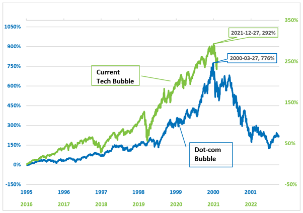

In the 1960s, the internet started with something called ARPANET. It was made by the U.S. Defense Department and connected computers for research. This helped connect universities and research places in a new way.
By the 1980s, the networks were growing a lot. This was like building the base for today's internet. Also, there was a way to make web addresses easier to read and understand.
In the 1990s, a person named Tim Berners-Lee created the World Wide Web (WWW). This made the internet easier for everyone to use. People could see pictures and use web browsers like Mosaic and Netscape Navigator. Businesses started to use the internet too.
